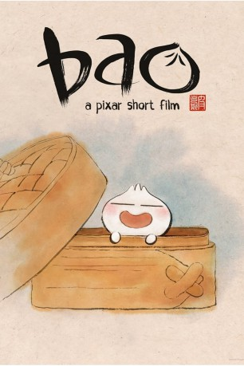

IMDB-Wertung: 7.5 / 10
IMDB-Wertung: 7.5 / 10  Tomatometer: 100
Tomatometer: 100  Metascore:
Metascore: 
A Chinese-Canadian woman suffering from empty nest syndrome gets a second shot at motherhood when one of her handmade dumplings comes alive.
 gesehen am 06.01.2019
gesehen am 06.01.2019 IMDB-Wertung: 7.5 / 10 Tomatometer: 100 Metascore:
A Chinese-Canadian woman suffering from empty nest syndrome gets a second shot at motherhood when one of her handmade dumplings comes alive.
Jahr: 2018
Dauer: 7 Minuten
FSK: 0
Land: USA Studio: Walt Disney Studios Motion PicturesTonspuren:
Untertitel:
Auflösung: 1080p (1920x1080) Größe: 633 MB
Genre: Fantasy, Animation/Trick, Familie, Kurzfilm
Regisseur: Domee Shi
Drehbuch:
Soundtrack: Toby Chu
Darsteller:
Datei: X:\Kinder Disney HD\2000-2018\Bao (2018, FSK0, 1920x1080).mkv seit 13.12.2018
Festplatte: Kinder-Filme+Trick
 Es gibt insgesamt 45 Filme in der Gruppe 'Kinder Disney HD\2000-2018'
Es gibt insgesamt 45 Filme in der Gruppe 'Kinder Disney HD\2000-2018'